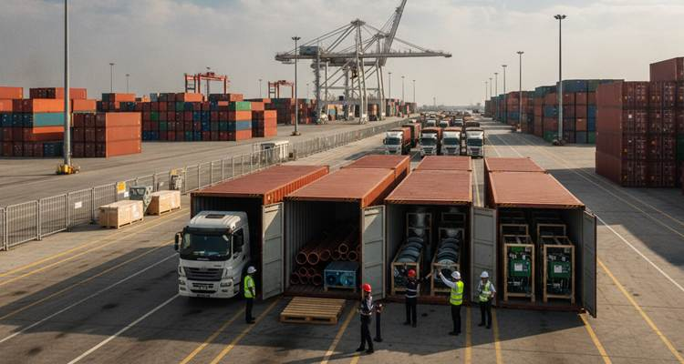

Custom Clearance- King Abdullah Port:
Introduction: 
Clarusto has grown for a strong database with client’s globally but
Middle East has been a prominent region while providing logistics services. One
of our client’s references has given us the chance for providing a
differentiation for custom clearance at King Abdullah Airport and Jeddah port.
The shipment consists of couple of containers carrying IP Camera,
copper pipes, horn loudspeaker, swirl air outlet, hand volume damper and
optical fiber cables. This is going to be the second chance that Clarusto has
to undergo through a preferred region.
Scope Of Work:
· As the cargo was time sensitive, a part of infrastructure rollout of a large shipment and end-to-end logistics and custom clearance for a mixed number of shipment items of telecom, electrical and HVAC components need to be initialized for a commercial development project in Saudi Arabia.
· Consignment included regulated and non-regulated items, subject to different compliance frameworks, making the clearance process highly complex.
Key Challenges:
· Multi Regulatory Environment enforces strict import monetary impositions like ZAKAT regulated by Tax and Customs Authority (ZATCA).
· Saudi standards of quality check directed by metrology and Quality organization.
· Cost optimization as the loading and offloading duration is limited to 5 hours as a free time, over-time indulges hefty penalties.
· Containment charges including 40’container- weighing 27 tons limited to transit only till Riyadh city.
· Each product category increases documentation complexity due to separate compliance pathways.
· Mixed shipment risk includes combined telecom, HVAC and industrial goods in one shipment; increases partial clearance delays, time taking inspection process and complex HS code mapping.
Key Activity:
To overcome the shortfalls covered for this consignment, Clarusto
Logistics has customized its operations along with a smart strategy for a
result driven logistic approach and recommendations, client preferred to
continue from King Abdullah Port.
· Most of the products needed to be assessed with saber platform registration to get a clearer path for reaching its destination.
· Pre-shipment compliance planning.
· IOR (Importer of Record) makes it significant in SA, as the client lacks in legal entity.
· Ensuring commercial registration rules with a local vendor to comply with.
· Separate HS code classification and declaration for each product.
· Calculated risk involved in group shipment.
· Segmented documentation.
Execution:
Availability of all valid documentation in accordance at the border and
eliminating mismatch errors plays a significant role to avoid delays in
transit.
· Commercial invoice.
· Certificate of Origin.
· Saber certificate.
· Technical datasheets.
· Declaration filed through Fasah system.
· Coordinated inspection with ZATCA.
· Managed duty structure (5-15 %) along with 15 % VAT.
Advantages:
· Successful clearance of multi category shipment in single cycle.
· Full compliance with SASO.
· Minimal clearance time taking procedure despite cargo complexity.
· No delays as planned strategy and enabled continuity in transit.
· No storage penalties.
Conclusion:
This entire strategized custom clearance project describes the
time management and team-work demonstrated at all stages while mixed
product-line in a single shipment takes place. However, with numerous questions
coming over, Clarusto Logistics believed in the core working and channelized
active partnered offshore group work to deliver a custom cleared pathway for a
smooth transit for its client.
Clarusto Logistics supported the customs clearance and onward movement of a time-sensitive infrastructure shipment into Saudi Arabia. The consignment included a mixed range of telecom, electrical, and HVAC components, including IP cameras, copper pipes, horn loudspeakers, swirl air outlets, hand volume dampers, and optical fibre cables.
The shipment formed part of a commercial development project and required careful handling due to the variety of product categories, regulatory requirements, and documentation involved.
The cargo included both regulated and non-regulated items, each requiring different compliance checks and documentation. This created a high-risk clearance environment, where incorrect classification, missing certificates, or document mismatches could have caused inspection delays, storage charges, or disruption to the project timeline.
The key challenges included:
· Multiple product categories within a single shipment
· Separate HS code classification requirements
· SABER and SASO-related compliance requirements
· ZATCA customs coordination
· Fasah declaration requirements
· Limited free time for loading and offloading
· Risk of storage, detention, and demurrage charges
· Time-sensitive onward movement to the final destination
Because the shipment contained a mix of telecom, HVAC, and industrial goods, the risk of partial clearance delays was high. A delay in one product category could have affected the movement of the full consignment.
Clarusto Logistics adopted a structured pre-clearance approach to reduce risk before the cargo reached the port.
The team reviewed the shipment category by category and prepared the required documentation in advance. Each item was mapped against the correct HS code, and the compliance pathway for regulated items was checked separately.
The clearance plan included:
· Pre-shipment compliance review
· SABER documentation checks where applicable
· Separate HS code classification for each product category
· Segmented documentation for regulated and non-regulated items
· Coordination with the Importer of Record requirement
· Commercial registration checks through the local importing entity
· Fasah declaration preparation
· Coordination with ZATCA for inspection and clearance
· Duty and VAT planning based on applicable Saudi import requirements
This approach helped reduce the risk of document mismatch, inspection delays, and unnecessary port charges.
Clarusto Logistics ensured that all key documents were available and aligned before clearance began.
The documentation included:
· Commercial invoice
· Certificate of origin
· SABER certificate where required
· Technical datasheets
· Product-wise HS code classification
· Fasah customs declaration
· Supporting documents for inspection and compliance checks
The team coordinated with the relevant customs and compliance stakeholders to manage the clearance process and support onward movement without disruption.
The shipment was cleared successfully despite the complexity of handling multiple product categories in a single consignment.
Key outcomes included:
· Successful clearance of a multi-category shipment
· Compliance with applicable Saudi import and quality requirements
· Reduced risk of inspection-related delay
· No disruption to the planned onward transit
· No avoidable storage penalties
· Smooth movement towards the final project destination
This project demonstrated Clarusto Logistics’ ability to manage complex customs clearance requirements in a demanding regulatory environment. By combining pre-shipment planning, product-level documentation, compliance coordination, and local execution support, Clarusto Logistics helped the client move a time-sensitive infrastructure shipment through Saudi customs with minimal disruption.
The case reflects Clarusto Logistics’ practical strength in handling complex, mixed-category shipments where documentation accuracy, regulatory awareness, and time management are critical.